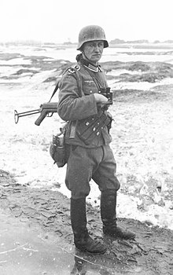
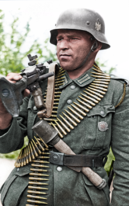
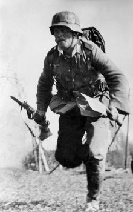
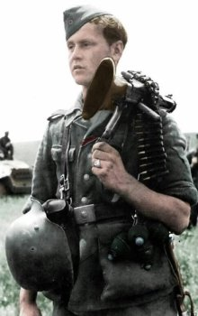
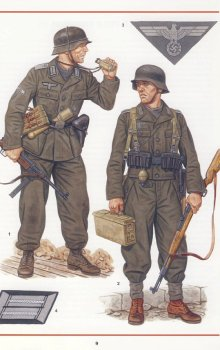

1939
Infermiere Ausiliario Norvegese
Schuetze cura i denti a un soldato scelto
Schuetze arrestano un soldato polacco

- Nome: Feldanzug - Schütze
- Disegnatore: ignoto
- Soggetto: Uniforme
- Mandante: Reichskriegsministerium
- Data: 18 Aprile 1939
- Tipo: Uniforme di Fanteria
- Coverage: Polonia, Francia
La versione più celebre dell'uniforme della Wehrmacht, quella della marcia su Varsavia e Parigi, di Dunkirk e dei primi furenti anni della macchina da guerra tedesca: colpisce l'occhio la comparsa delle bretelle al gibernaggio, gli stivali alti freschi delle forniture inizialmente ricche dei depositi di pelle, la piegatura curata dello Stahlhelm M35 e la scomparsa dei numeri di compagnia dai bottoni.
Curatore: Giovanni Dodi
1940-41
Schütze posa per una foto, Yugoslavia
Schützen cenano con i locali, Bosnia
Feldmütze con branca bianca
numeri slip-on in tessuto sulle spalline, Grecia.

- Nome: Feldanzug - Schütze
- Disegnatore: ignoto
- Soggetto: Uniforme
- Mandante: Reichskriegsministerium
- Data: Marzo 1940-Luglio 1941
- Tipo: Uniforme di Fanteria
- Coverage: Yugoslavia, Grecia, Russia
Nel 1940, l'uniforme affronta un'ondata di cambiamenti a causa del calo delle materie prime: a farne le spese gli stivali (prima accorciati e poi sostituiti da scarponi e ghette), lo Stahlhelm che non viene più verniciato e perde addirittura la decalcomania nazionale, i numerini di reggimento sulle spalline sostituiti da numeri slip-on in tessuto, e anche le bretelle vengono ormai fatte in cotone per risparmiare pelle. Infine, il colore dell'uniforme viene completamente standardizzato anche su pantaloni e sfondo dell'Aquila.
Curatore: Romolo Sassi
1942
Schütze degli Afrika Korps
Stahlhelm dipinti con teschi, Russia
Mitragliere con il nuovo Stahlhelm M42
Schütze si arrende, Russia

- Nome: Feldanzug - Schütze
- Disegnatore: ignoto
- Soggetto: Uniforme
- Mandante: Reichskriegsministerium
- Data:Luglio 1942
- Tipo: Uniforme di Fanteria
- Coverage:Russia, Italia, Nord Africa
Nel 1942 viene aggiunto un bottone alla Feldbluse, portandoli a sei, e per risparmiare tessuto viene rimossa la branca dal Feldmütze che entra in produzione nel nuovo modello con pieghe bottonate. L'elmetto viene prodotto in quantità molto maggiori per l'Operazione Barbarossa, e quindi per velocizzare il processo i bordi non vengono ripiegati dandogli un aspetto più tagliente: è il nuovo M42.
Curatore: Tony Barese
1943-44
Alpino con il nuovo Feldmütze M43
Panzergrenadiere della Hermann Goering con Panzerfaust, Italia
Soldato inglese ispeziona prigionieri artiglieri, Normandia 1944. Si noti la nuova Feldbluse
Veterano stremato dalla ritirata di Russia

- Nome: Feldanzug - Schütze
- Disegnatore: ignoto
- Soggetto: Uniforme
- Mandante: Reichskriegsministerium
- Data:Giugno 1943
- Tipo: Uniforme di Fanteria
- Coverage:Italia, Yugoslavia, Francia, Fronte Orientale
Nel 1943, con l'armistizio d'Italia e la guerra ormai verso una sconfitta certa, la Wehrmacht studia nuove soluzioni tecniche per inseguire il mito dell'Endsieg: Vengono rimossi gli scomodi orli al collo della Feldbluse e viene aggiunta una visiera al Feldmütze per rendere le truppe più versatili in combattimento. Dal 43' in poi le uniformi tendono a un colore più scuro per via dell'integrazione di fibre artificiali e di legno. Anche gli stivali seguono questo processo perdendo la verniciatura e rimanendo quindi marrone naturale. Scompare infine l'Aquila dal petto, per risparmiare stoffa.
Curatore: Nicola Campi
1944-45
Un anziano viene addestrato all'uso del Panzerfaust
Primo piano di un bambino combattente nella Volkssturm
Manichino con la nuova camicia corta M44 in Feldgrau chiaro
Schütze tedesco catturato da un russo

- Nome: Feldanzug - Schütze
- Disegnatore: ignoto
- Soggetto: Uniforme
- Mandante: Reichskriegsministerium
- Data:Settembre 1944
- Tipo: Uniforme di Fanteria
- Coverage:Italia, Germania, Francia, Fronte Orientale
Il 25 Settembre del 1944, la Wehrmacht mette in produzione l'ultimo modello di uniforme, la mod. 44. La popolazione tedesca sfinita nelle fabbriche è costretta a combattere contro l'esercito sovietico e anglofrancoamericano, quasi sempre in abiti civili con la sola differenza della fascia Volkssturm. Gli stessi soldati ormai non seguono più un regolamento nel vestiario, ed è comune vedere abiti civili commisti a pezzi d'uniforme.
Curatore: Vladislav Pizzo